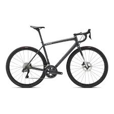
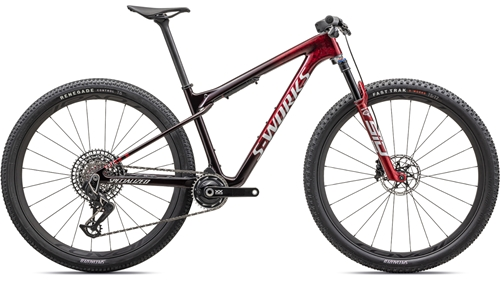

BIKE SPEED
Aethos
Não nos entenda mal, somos todos a favor das corridas. Os Grand Tours, os Classic’s Monuments – estão em nosso DNA. Mas às vezes pedalar simplesmente por pedalar, pedalar por amor à bike, é exatamente o que precisamos. E é para isso que vive a Aethos. Ela não perdeu nada de desempenho e é o quadro mais leve do mercado, mas sem comprometer o estilo. Aethos: Bilhões de cálculos em busca de uma coisa – o pedal perfeito. Complete o quadro mais leve do mundo com o lendário conjunto Dura-Ace Di2 da Shimano e as rodas Alpinist leves da Roval e você terá uma bike de primeira linha perfeitamente equilibrada que não abre mão de nada em nome do desempenho.
83.999,00
Valor à vista!
Voltar ao início
MOUNTAIN BIKE
Detalhes do Produto
Procurando por uma bicicleta que voa tão bem quanto sprinta? Não procure mais do que a Epic EVO Expert. Com as rodas no ar ou com a cabeça abaixada, a habilidosa combinação de manuseio inspirado, geometria capaz e eficiência de pedalagem extremamente focada da Epic EVO Expert garante que nenhum ciclista precise escolher entre velocidade e diversão.
- Inverta para Arrasar: Ajuste o passeio do quadro de carbono FACT 11m da Epic EVO para combinar com suas características de manuseio preferidas com a simplicidade do flip-chip que permite aos ciclistas reduzir o ângulo da caixa de direção da EVO em meio grau.
- A suspensão na dianteira é fornecida pela RockShox com seu garfo SID Select+ de 120 milímetros, que apresenta o amortecedor Charger 2 RL com ajuste de compressão de duas posições para uma impressionante eficiência de pedalada.
- O canote retrátil Manic da X-Fusion oferece ajuste de curso infinitamente ajustável por meio de sua elegante alavanca remota no estilo de câmbio, para operação sem complicações quando as coisas ficam complicadas.
- Descendendo de uma longa linhagem de competições da Copa do Mundo, as rodas Roval Control Carbon, fabricadas à mão, apresentam uma moderna borda sem gancho com uma largura interna de 29 milímetros.